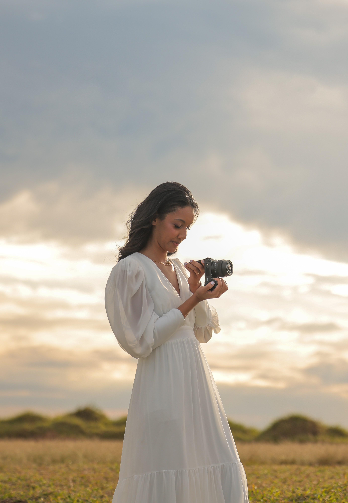

Me conta como é o seu momento, o que vocês imaginam pro dia e o que faz sentido pra essa fase da vida de vocês. A partir disso, a gente constrói juntos uma experiência tranquila — e um jeito de registrar que vai muito além da foto em si.
Conversar no WhatsAppGosto de conduzir cada ensaio com sensibilidade, criando um ambiente leve onde vocês não precisam se preocupar com poses — só em viver o momento. Assim, as imagens nascem de forma autêntica, transformando instantes simples em memórias cheias de significado.
Todas as fotos são editadas em alta resolução e entregues em galeria on-line completa — sem mínimo de fotos e sem seleção prévia por parte de vocês. Para ensaios (como pré-wedding), a entrega acontece em até 15 dias úteis.
Sim! Os valores de ensaio divulgados são exclusivos para Campinas e região — para outras localidades, consulte condições especiais. O custo de deslocamento não está incluso nos pacotes.
Sim, ofereço cobertura em cinema como serviço adicional, além da fotografia. Também é possível incluir um segundo fotógrafo, casamento civil e álbum impresso — me chama que monto a opção ideal pra vocês.
Sim! Fotógrafo adicional, hora extra de cobertura, cineasta, cobertura do casamento civil e álbum impresso são todos serviços extras que podem ser incluídos na sua proposta.
Não! O ensaio pré-wedding tem duração de 2 horas, sem limite de fotos entregues, com galeria on-line disponibilizada em até 15 dias úteis. Para horas adicionais, consulte condições especiais.
O ensaio pode durar de 1 a 4 horas, em 1 ou 2 locais, dependendo da proposta escolhida. Assim como nos demais ensaios, a entrega é completa em galeria on-line, com todas as fotos editadas em alta resolução e sem mínimo de fotos.
Sim, a cobertura do casamento civil pode ser contratada como serviço adicional, separada da cerimônia e festa.